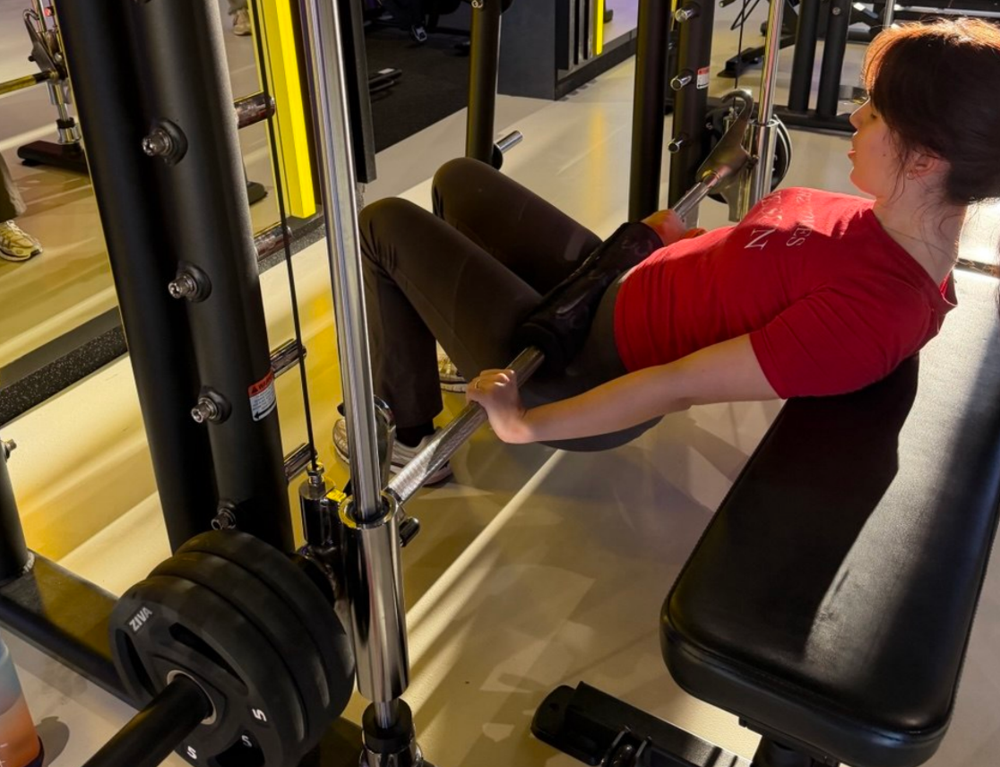
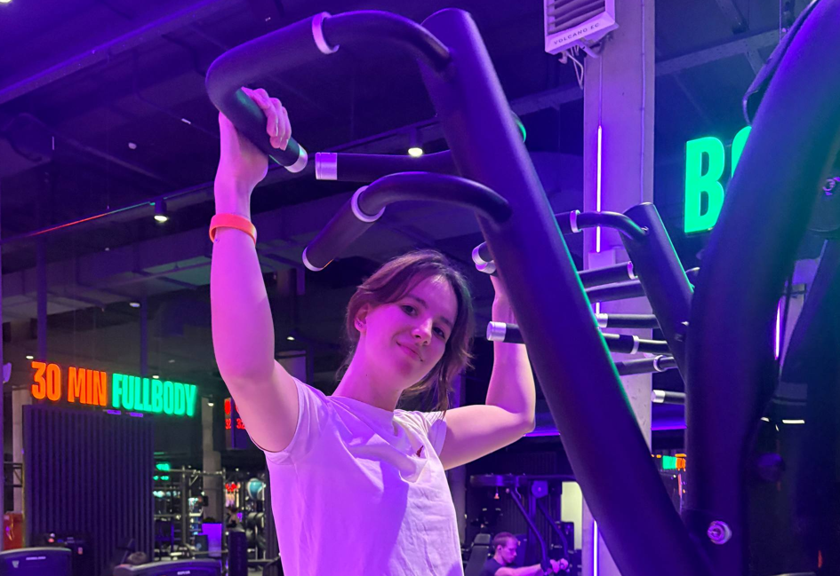
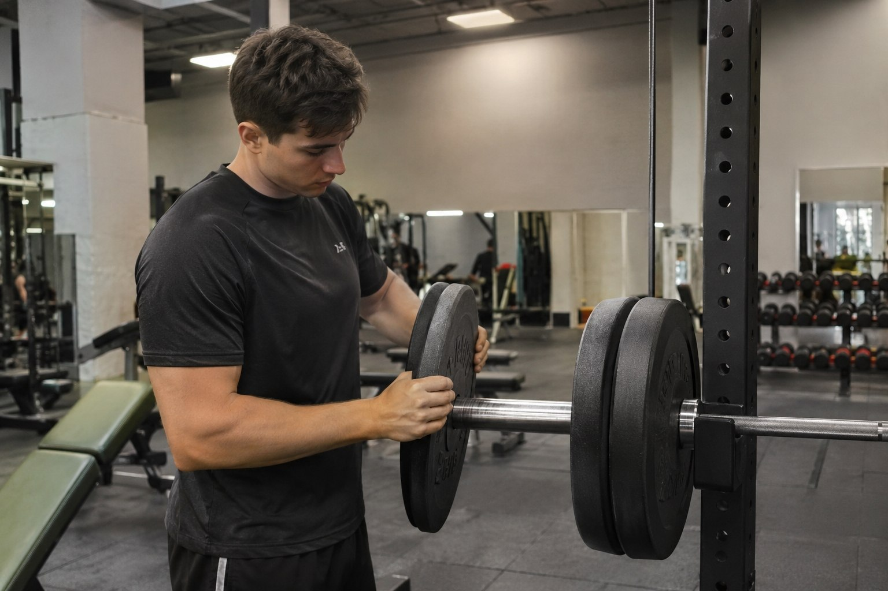

Найди свой ритм.
Примеры занятий на основе моего дневника. Объём и нагрузку подбирай под восстановление и опыт.

Низ тела
Ягодицы, задняя и передняя поверхность бедра.

Верх тела
Спина, грудь, плечи и руки.
Лёгкий день
Подвижность, дыхание и спокойная активность.
Пример недели
Понедельник
Верх тела
Среда
Низ тела
Пятница
Верх или низ по очереди
Между занятиями
Отдых и прогулки
Здесь приведен пример расписания, а не обязательная программа. Не добавляй упражнения только ради длинного списка: качество подходов и возможность восстановиться важнее. Также важно верно выбрать свой рабочий вес.
 Выбор
Выбор
Как выбрать занятие
Начни с вопроса, как ты себя чувствуешь сегодня. Если есть силы и хорошее настроение, подойдёт силовая тренировка: верх или низ тела по очереди. Если накопилась усталость или была короткая ночь, лучше выбрать лёгкий день с прогулкой, разминкой или йогой.
Не старайся уместить всё в одно занятие. Три-четыре качественных упражнения, выполненных аккуратно, дают больше пользы, чем десять упражнений на скорую руку. Записывай в дневник свои показатели и веса, чтобы в следующий раз начать с понятной точки.
Для новичка хорошей отправной точкой станут два силовых занятия в неделю и одна прогулка. Через месяц можно добавить третью тренировку, если сон и самочувствие в порядке.

РитмКак устроена неделя
На моем примере в дневнике занятия чередуются: день для низа тела, день для верха, между ними кардио, прогулка или отдых. Такой ритм даёт мышцам время на восстановление и не перегружает одни и те же суставы. Если график плотный, достаточно двух силовых занятий в неделю, а третье можно заменить прогулкой.
Между тяжёлыми занятиями для одной группы мышц оставляй хотя бы день отдыха. Если после тренировки мышцы болят так, что мешают ходить или спать, в следующий раз уменьши объём. Также стоит помнить, что резкая боль в суставе — повод остановиться и показаться специалисту.
Несколько правил для спортсмена
Эти правила подходят и новичку, и тому, кто тренируется уже давно.
- Сначала разминка, потом рабочие подходы.
- Оставляй запас примерно в два повторения до отказа.
- Заканчивай заминкой и записью в дневник.
- Если техника распадается, снизь вес, а не терпи.
Если занятие не получилось, это нормально: запиши, что мешало, и скорректируй план. Один неудачный день не отменяет достигнутых результатов, а регулярность важнее идеальной тренировки.